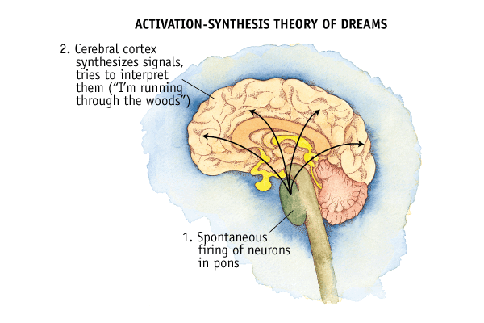

Activation-Synthesis Hypothesis

- The activation-synthesis model suggests that dreams are caused by the physiological processes of the brain. While people used to believe that sleeping and dreaming was a passive process, researchers now know that the brain is anything but quiet during sleep.
- So what sort of things are happening in the sleeping brain? A wide variety of neural activity takes place as we slumber.
- The differences in neuronal activity of the brainstem during waking and REM sleep were observed, and the hypothesis proposes that dreams result from brain activation during REM sleep.
For more information: Check out-
Activation-Synthesis Theory